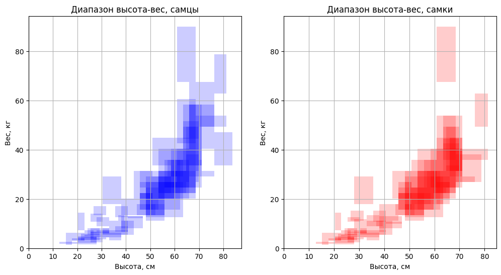
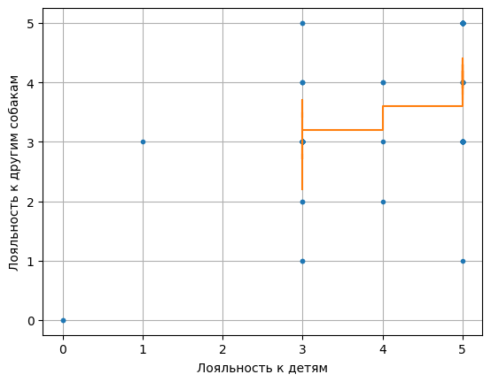

Входные данные
В данном исследовании рассматривались 97 различных пород собак
- Название породы
- Минимальная продолжительности жизни, года
- Максимальная продолжительности жизни, года
- Минимальная высота самцов, дюймы
- Максимальная высота самцов, дюймы
- Минимальная высота самок, дюймы
- Максимальная высота самок, дюймы
- Минимальный вес самцов, фунты
- Максимальный вес самцов, фунты
- Минимальный вес самок, фунты
- Максимальный вес самок, фунты
- Другие характеристики, условные единицы
| Name | min_life_expectancy | max_life_expectancy | max_height_male | max_height_female | max_weight_male | max_weight_female | min_height_male | min_height_female | min_weight_male | min_weight_female | good_with_children | good_with_other_dogs | shedding | grooming | drooling | coat_length | good_with_strangers | playfulness | protectiveness | trainability | energy | barking |
|---|
Рассмотрим вариации роста и веса собак в зависимости от пола и породы
Между ростом собаки и ее весом наблюдаем корреляцию (ее можно подтвердить тестом Спирмена). Судя по графикам зависимость имеет кубический характер.

Детальные вариации роста и веса собак в зависимости от пола и породы
Детальные вариации возраста собак в зависимости от породы
***Все гипотезы мы будем проверять с помощью теста Шапиро-Уилка
Интерсно проверить - крупные собаки правда добрее, чем маленькие?
Гипотеза №2: Существует взаимосвязь между размером собаки и её добротой
Нулевая гипотеза: Собаки крупных пород более добрые, чем собаки мелких пород.
Альтернативная гипотеза: Собаки мелких пород более добрые, чем собаки крупных пород.


Выводы: Из результатов тестов Шипиро-Вилка можно сказать, что собаки относятся к детям более лояльно, чем к незнакомцам и другим собакам. Судя по графикам теста Спиримана можно сделать вывод, что зависимоть между размером и лояльностью к детям отсутствует и зависимость между размером и лояльностью к незнакомцам, другим собакам слабо выраженная. Гипотеза опровергнута.
Гипотеза №3: Продолжительность жизни собаки и ее размеры связаны
Нулевая гипотеза: Собаки добрые к кому-то одному, добры к кому-то ещё.
Альтернативная гипотеза: Собаки добрые к кому-то одному, недобры к другим.

Выводы: Как видно из теста Спиримана доброта к детям, незнакмцам и другим собакам имеет выраженную корреляцию с друг другом. Гипотеза подтвердилась.
Анализ
Найдем матрицу корреляции базы данных и построим ее тепловую диаграмму.

Выводы:
- вес пропорционален росту
- продолжительность жизни падает с увеличением габаритов
- слюнеобильность (drooling) пропорциональна весу
- доброта к другим собакам, детям и незнакомцам, а также игривость, хорошо скореллированы друг с другом
- добрые породы немного легче поддаются дрессировке
- нередко крупные породы более добрые и игривые, чем мелкие
- большая игривость может означать много лая (barking) и энергичность (energy)
- частота и объем линьки (shedding) пропорционален габаритам и энергичности
- крупные породы лают меньше
Покажем характер некоторых зависимостей:

Выводы: В ходе данной работы мы пользовались статистическими методами для проверки гипотез - одна из них оказалась неверной, другая - верной. Тщательный анализ данных позволил выявить зависимости, которые изначально не были очевидны.